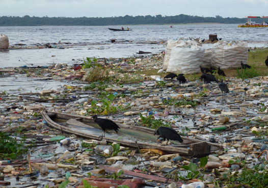
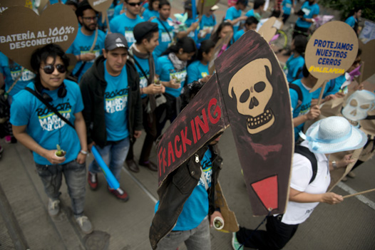

En los últimos años ha tomado fuerza el tema ambiental, el impacto que ha generado el sector industrial, el de extracción, el agroindustrial, el turístico y, en general, el desarrollo económico sobre la Tierra. No es necesario ser un experto para percibir que algo en el ambiente no está bien: automóviles que pasan por nuestro lado y dejan su estela de humo negra, que en ocasiones nos asfixia; cada vez hay que recorrer más distancia para llegar a un bosque; el olor nauseabundo de los ríos que atraviesan nuestra ciudad, la sensación de sofoco y el calor inusual. Así pues, cada una de estas situaciones tiene una explicación en el deterioro ambiental actual.
-
01
Problemas ambientales del mundo
Open or CloseEn los primeros tiempos de la humanidad, los seres humanos desarrollaron una relación mística con la tierra, el agua y todos los seres vivos por considerarlos su fuente de sustento y vida. Estas concepciones están presentes en algunos pueblos dispersos en el mundo y, en especial, en las comunidades indígenas de América, que consideran que la armonía con la naturaleza es el único camino para la preservación de la especie humana.
Entre las diferentes problemáticas que enfrenta el mundo en materia ambiental existen dos desafíos que involucran una necesidad de cambio de conciencia en el individuo, y que son imprescindibles en el mundo actual. El primero tiene que ver con la forma como el ser humano se relaciona con las otras especies; el segundo, la exigencia que está haciendo el medio ambiente sobre la urgencia de transformar nuestros hábitos de consumo.
Profundiza
01.1El ser humano frente a las otras especies
Uno de los desafíos que enfrenta la problemática ambiental del mundo está relacionado con la distancia que ha tomado el ser humano frente a las otras especies. ¿Sabemos qué árboles o vegetación tiene el barrio, la calle o los alrededores de la casa, o qué pájaros o insectos viven cerca? Esta no es una pregunta sobre sus nombres científicos o su clasificación dentro de las especies, sino que hace referencia a saber qué comen, cuánto viven, qué condiciones climáticas necesitan, qué papel cumplen en el sistema que habitan y comparten con nosotros esas comunidades de insectos, pájaros, árboles, plantas, flores, etc.
En la urgencia de cuidado del medio ambiente es necesario establecer una relación de igualdad entre especies.
Recuerda
La relación que establecemos con otras especies se ve limitada a la crianza de una mascota o a la adopción de un árbol. No obstante, también es fundamental reconocer las distintas especies no solamente en el ámbito de beneficio hacia el ser humano, sino de lo que ellas mismas requieren para su existencia y del eslabón que representan en pequeños o grandes ecosistemas.
01.2El ser humano frente a lo que consume
Además del descuido por reconocer con qué seres habitamos un territorio, también omitimos indagar de dónde provienen las cosas que usamos en nuestra vida diaria y qué sucede con ellas una vez las arrojamos a la basura. Cada producto o servicio, ropa, electrodoméstico, celular, gasolina, servicio de internet, entre otros, tiene un ciclo de producción y distribución para llegar a las manos del consumidor. Sin embargo, el ciclo no termina allí, continúa; pasando por el tiempo que se usa y luego se desecha hasta cuando desaparece del planeta, considerando que en muchos casos no se elimina totalmente.
Profundiza
Muchos de los productos que usamos provienen de los combustibles fósiles, de la tala de árboles, del sacrificio de animales es decir, de recursos naturales no renovables. Los usamos durante algún tiempo y luego los desechamos. Pero ¿qué pasa después con estos desechos?
Se genera una gran mezcla de residuos de plástico, vidrio, cartón, papel y desechos de comidas en un relleno sanitario, esto dificulta aún más que estos elementos desaparezcan de nuestras vidas. La combinación de basura, metales pesados y desechos orgánicos e inorgánicos genera unos líquidos llamados lixiviados, que alcanzan a filtrarse en la tierra y contaminan con plomo y mercurio las aguas subterráneas, llegando incluso hasta el agua que consumimos.
Los rellenos sanitarios no son una solución para la disposición de basuras, lo único que sucede es que no volvemos a ver la basura, pero aún queda allí. Son necesarias otras alternativas y estas tienen que ver con cambios en el sistema de consumo.
Productos más consumidos en el mundo Tipo de producto Duración en las manos del consumidor Desecho generado Gaseosa 1 minuto a 12 horas Envases plásticos, latas Celular 2 años Piezas electrónicas y baterías Pasabocas 1 minuto a 8 horas Bolsa plástica Cerveza 1 minuto a 10 horas Envase de lata Crema dental 8 días a 30 días promedio Cartón, plástico Reconocer el ciclo de las cosas nos conduce a saber más sobre los productos que compramos, indagar de dónde provienen y así tomar decisiones ambientales sobre la adquisición de productos y servicios, y en este mismo sentido revalorar la necesidad de consumir o de comprar. Cada habitante del planeta es responsable del calentamiento global, y cada uno deja una huella de carbono en la atmosfera, ya que está inmerso en el ciclo del producto o servicio de origen en combustibles fósiles, lo que cada acción diaria lleva a la liberación de dióxido de carbono.
01.3Consolidación
Actividad para consolidar lo que has aprendido en esta sección.
-
02
El impacto del desarrollo industrial y tecnológico
Open or CloseDebemos remontarnos a la Revolución Industrial del siglo XVIII para referirnos a la abrupta transformación que ha sufrido el medio ambiente como consecuencia del cambio en las formas de producción. Así pues, la aparición de la sociedad de consumo se debe considerar también como uno de los momentos de mayor impacto. Este es el momento en el cual se empieza a favorecer la industria, el comercio, la publicidad, la moda y, en general, el crecimiento económico, más que la protección de la tierra y la salud del ser humano.
En esto tiene que ver la forma como fue concebida la economía. Empezó como una ciencia en el siglo XVIII con la circulación del libro "La riqueza de las naciones", escrito por Adam Smith en 1776, cuya teoría económica analizaba las ventajas de ciertas regiones si se lograba un aprovechamiento de la oferta natural, que luego fue llamada explotación de los recursos naturales.
Luego, en 1850 se da una Segunda Revolución Industrial, cuyo fenómeno más sobresaliente es el descubrimiento de la energía eléctrica, puesto que trajo consigo un ordenamiento diferente en la forma de producción y mayor intervención de productores y consumidores.
A partir del siglo XVIII se comienza a ver el tema del desarrollo económico como imprescindible e imparable y separado de lo ambiental, y solo hasta mediados del siglo XX se visualiza lo limitado de los recursos naturales, entonces se integra a la teoría económica el concepto de lo ambiental y sus límites.
En el siglo XXI se habla de una Tercera Revolución Industrial como respuesta a los impactos que el desarrollo económico y tecnológico ha generado en la Tierra, fundada en la obtención de energías completamente renovables y en los alcances de internet.
La figura de sistemas de gestión ambiental en las empresas e industrias comienza a contribuir con el medio ambiente, como una exigencia de responsabilidad ambiental que apenas se está construyendo.
Si bien se ha priorizado el manejo de algunos desechos, aún no se ha hecho un exhaustivo control de estos, y en la mayoría de los casos se han determinado algunas medidas, como alargar la vida útil de los objetos, el uso de despiece y el reciclaje tecnológico.
Recuerda
El desarrollo industrial y tecnológico ha generado un impacto sobre el medio ambiente, ya que se mantiene sobre una lógica de mercado en la que es imprescindible "usar y desechar", esto garantiza vender mucho. Frente a esta problemática se han generado normas para que la industria se haga cargo de los residuos, en la lógica de una responsabilidad extendida de los fabricantes y productores. Hoy se está trabajando en la consolidación de canales para devolver residuos de productos, en el intento de generar una "cadena de posconsumo".
Otro impacto ambiental de esta Tercera Revolución Industrial es la extracción de las materias primas necesarias para la fabricación de aparatos electrónicos, como los celulares, los computadores y los videojuegos; para ello se requieren ciertos minerales como el coltán y otros componentes que se extraen generalmente en regiones de África y América Latina, donde las condiciones sociales y de conflicto armado se agravan con la explotación minera.
Cada año, en el mundo se desechan cerca de 1000 millones de llantas de toda clase de vehículos y su proceso de degradación tarda cien años. Desde hace casi medio siglo algunos países vienen tratando estos agentes contaminantes para extraer de ellos acero, materiales orgánicos, utilizarlos en la producción de combustibles no contaminantes y como materia prima para pavimentos y canchas sintéticas. Colombia se abre camino en este propósito a través de la alianza entre el Distrito Capital, Sistema Verde y Argos.
Dentro de esta dinámica de las distintas revoluciones industriales que se han dado a lo largo de más de tres siglos, se hace el daño ambiental ocasionado principalmente por la explotación y uso de combustibles fósiles y el progresivo deterioro del recurso hídrico.
02.1Los combustibles fósiles
Durante el ciclo de producción de cualquier producto o servicio se requiere energía, esta se consigue a través de la combustión, fenómeno en el que una sustancia al contacto con el oxígeno se quema. El hidrógeno y el carbono son las sustancias que arden con mayor facilidad y que están presentes en grandes cantidades en el petróleo, el carbón y el gas.
Estos combustibles se han formado durante millones de años en el subsuelo gracias a la acumulación de moléculas de hidrógeno y carbono (hidrocarburos) de antiguos organismos vivos, vegetales y animales, que se fueron depositando y descomponiendo entre capas de sedimentos, de allí el término de fósiles. Por esta misma composición su combustión genera dióxido de carbono, que al acumularse en la atmósfera produce el calentamiento global.
Estos combustibles fósiles han tardado miles de años en solidificarse en el caso del carbón, y hacerse líquido en el caso del petróleo y el gas, por ello se consideran recursos no renovables, porque se agotan y no es posible volver a recuperarlos. Un gran porcentaje de las cosas que usamos provienen de estos combustibles fósiles.
Recuerda
En el mundo contemporáneo los términos de bienestar y calidad de vida parecen ser sinónimos de uso de fuentes de energía no renovable. Bajo esta proposición, se mantiene un complejo sistema económico basado en la extracción, transformación y venta de combustibles fósiles, sin considerar que está muy próximo su agotamiento y los daños que ocasionan al planeta.
Soluciones globales a la problemática ambiental
Frente al tema de calentamiento global se ha discutido bastante sobre sus causas; algunos investigadores han analizado y considerado la radiación solar, pero lo cierto es que ha aumentado la temperatura de manera considerable desde mediados del siglo pasado con la industrialización. Esto significa que el cambio climático no se arregla localmente, sino que requiere una solución mundial.
Aunque la industria del petróleo contribuye al funcionamiento de la vida moderna, es necesario reflexionar también sobre su impacto irreversible en el medio ambiente, puesto que ha predominado más el tema de beneficio del negocio que la reflexión sobre su impacto ambiental.
02.2La crisis del agua
Hay una preocupación global por los problemas mundiales del agua, y en este sentido se creó en 1996 una red internacional de instituciones y ciudadanos de diversos sectores llamada Consejo Mundial del Agua, que viene organizando desde 1997 el Foro Mundial del Agua. También la Organización de las Naciones Unidas (ONU) trabaja en asuntos relacionados con el sistema mundial de abastecimiento de agua y la acelerada contaminación de las fuentes hídricas.
Algunos analistas aseguran que hay una crisis mundial del agua y sostienen que el problema radica en la contaminación y en la merma del recurso. Un alto porcentaje de nuestras fuentes hídricas están contaminadas, y a pesar de los esfuerzos de algunos sectores de la sociedad civil e instituciones, aún no hay una solución.
La crisis mundial del agua ha conducido a la creación de conceptos como la "huella hídrica", que intenta medir el impacto que tiene la industria y el uso que hacen los seres humanos de este recurso.
Los científicos calculan que solo el 0,007 % del agua del planeta es apta para el consumo humano, más de 786 millones de personas no tienen acceso a agua potable y cerca de 1400 menores de cinco años mueren a diario por enfermedades relacionadas con la contaminación y escasez del agua. Para 2025 cerca de 2000 millones de personas vivirán en zonas con acceso muy limitado al recurso hídrico.
Recuerda
Los páramos son ecosistemas muy frágiles que cubren reducidas extensiones de Costa Rica, Ecuador, Venezuela y Colombia. Son considerados como verdaderas fábricas de agua e importantes nichos de diversidad biológica. Entre las principales amenazas que se ciernen sobre los páramos se encuentran la agricultura, la ganadería extensiva, la deforestación, la explotación de canteras y los incendios forestales.
02.3Consolidación
Actividad para consolidar lo que has aprendido en esta sección.
-
03
La protección del medio ambiente
Open or CloseEn la década de los sesenta sugieron movimientos sociales que tuvieron un protagonismo mayor luego de los acontecimientos de mayo del 68: la cultura hippie, los ecologistas, los movimientos indígenas y estudiantiles, las corrientes pacifistas contrarias a la guerra de Vietnam y el sector obrero, entre otros, se convirtieron en precursores de este llamado de atención al mundo sobre el impacto irreversible que sufría el entorno ambiental a causa del capitalismo desenfrenado.
En varias regiones y ciudades del mundo se presentaban procesos de urbanización masiva, auge de los barrios de invasión, industrialización del sector agrícola y se implementaba de forma acelerada el modelo de sociedad de consumo.
En este escenario, los movimientos sociales generaron una reflexión que luego se manifestó y se recogió en los acuerdos que en los años siguientes se firmaron para la protección del medio ambiente. Es decir, que todos los acuerdos, convenios y tratados que se han firmado entre los diferentes países por un control de los efectos devastadores del desarrollo, la economía de mercado y la sociedad de consumo sobre la naturaleza, son el resultado de estas luchas sociales, cuyas ideas influyeron en decisiones políticas de gran magnitud.
Así mismo, son estos movimientos sociales los que han incentivado el uso de recursos energéticos alternativos y amigables con el medio ambiente.
Los movimientos ecologistas en todo el mundo son los motores de pactos y acuerdos internacionales que han salvado la vida a millones de personas, al prohibir la producción de plomo en carburantes y para uso industrial, de clorofluorocarbonos, que destruyen la capa de ozono, al reducir las emisiones de gases tóxicos, penalizar el consumo de bolsas de plástico y promover el uso racional de los recursos, el rechazo al consumismo, la adecuada disposición de las basuras y el reciclaje, entre otros.
03.1La sostenibilidad y la Cumbre de Río de 1992
En la Cumbre de la Tierra de Río de Janeiro, se implementa el concepto de sostenibilidad para referirse a la obligación de considerar en cualquier actividad del ser humano un equilibrio entre desarrollo económico, cuidado del medio ambiente y bienestar social, que permita la satisfacción de las necesidades humanas del momento sin poner en riesgo los recursos para las futuras generaciones. Esto implica que es necesario el uso de recursos renovables de manera consciente y responsable para su conservación y renovación. El concepto de sostenibilidad surge como alternativa a la idea generalizada de que lo fundamental era el desarrollo económico sin considerar el impacto que esto generaba y lo agotable de los recursos.
Aunque el concepto de sostenibilidad toma fuerza en la Cumbre de Río celebrada en 1992; es el resultado de procesos sociales importantes que aún mantienen presión sobre las decisiones políticas y económicas que afectan el equilibrio medioambiental.
Uno de los problemas más urgentes tratados en esta Cumbre fue el cambio climático por considerar que el planeta está llegando a su límite y la incertidumbre sobre los cambios y efectos futuros es altísima.
Para dar solución a este panorama de incertidumbre se hace necesario que el ciudadano común comience a reflexionar sobre lo que hasta ahora es estimado como bienestar y desarrollo; esto implica, entre otras cosas, que sea consciente de su participación y responsabilidad en la generación de residuos.
El balance general de esta Cumbre, y sus repercusiones hasta el día de hoy, muestra que los países no toman medidas eficaces y necesarias para comprometer a las grandes empresas en la reducción de la emisión de gases de efecto invernadero. Sin embargo, en otros escenarios se están promoviendo prácticas que intentan reducir la huella ambiental que la vida moderna y las actividades económicas están generando en el medio ambiente; en este sentido, se habla hoy de modelos de desarrollo sustentable.
En el campo particular de la producción agrícola y de alimentos, algunos movimientos populares que surgieron hace varias décadas han tomado una fuerza inusitada en los últimos años y hoy son ejemplo de modelos de desarrollo sustentable. Las estrategias propuestas por estos son opuestas al modelo de "Revolución verde" que se dio en buena parte del mundo después de la Segunda Guerra Mundial y que buscaba esencialmente un aceleramiento de la producción mundial de alimentos sin considerar los efectos negativos a largo plazo sobre la salud humana y el equilibrio ambiental.
Lo que trajo consigo la mal llamada "Revolución verde" Estrategia Efectos Uso indiscriminado de sustancias químicas (agroquímicos: fertilizantes, insecticidas y plaguicidas) en los cultivos para el control de plagas y el aumento de la productividad. - Desequilibrio en los suelos por el uso exagerado de nitrógenos.
- Desaparición de especies de insectos que eran agentes polinizadores.
- Presencia de plaguicidas en los alimentos que el organismo humano no alcanza a procesar.
- Alteración del equilibrio de los diferentes ecosistemas.Implementación de monocultivos - Disminución en la diversidad de semillas y especies de plantas.
- Modificación de los hábitos alimentarios tradicionales y locales.Desarrollo de transgénicos - Incremento de la producción de alimentos a partir de cultivos genéticamente modificados, con efectos nocivos sobre la salud humana y el equilibrio ambiental. Colombia es el mayor productor de café suave arábico lavado del mundo. En las últimas décadas se hace evidente el retorno de los productores al cultivo de café orgánico, libre de pesticidas y plaguicidas que contaminan el medio ambiente y tienen efectos nocivos sobre la salud de los consumidores.
Profundiza
03.2Los convenios internacionales para la protección del medio ambiente
Los convenios, tratados o acuerdos se suscriben generalmente entre Estados y también entre organizaciones internacionales. Estos se realizan a través de la firma de un documento escrito después de una negociación entre las partes. Los Estados firmantes se comprometen a presentar informes periódicos sobre la situación de aplicación de las medidas que el tratado o convenio establece a nivel nacional.
El MEA es el órgano encargado de vigilar la aplicación de los Tratados en el tema del Medio Ambiente de las Naciones Unidas, y el PNUMA o Programa de Naciones Unidas para el Medio Ambiente es el órgano defensor, facilitador y educador para el desarrollo sostenible.
03.3Las energías limpias
Se habla de energías limpias para referirse a la energía que tiene la característica de no contaminar con residuos, en oposición a las energías generadas a partir de combustibles fósiles o la energía nuclear, que liberan residuos contaminantes. También reciben el nombre de energías renovables, sostenibles y alternativas.
El interés por la investigación y uso de energías limpias responde a varias necesidades, una de ellas es el agotamiento del petróleo, el carbón y el gas. Se considera a partir del análisis del consumo actual de energía, que las reservas alcanzarían solamente para unas décadas más. Por otro lado, está el tema de contaminación que implica el uso de estos combustibles fósiles que generan grandes cantidades de dióxido de carbono, causante del calentamiento global.
Otro factor importante que despierta interés en el uso de energías alternativas, es el análisis de los efectos devastadores de los accidentes que se han presentado en plantas nucleares y en procesos relacionados con la explotación y transporte de petróleo.
Un paso importante que se viene dando para la obtención e implementación de energías alternativas consiste en descentralizar y reducir el tradicional esquema de producción energética en grandes centrales, que la distribuyen a diferentes regiones y que enfocan todos sus esfuerzos a satisfacer las demandas del sector productivo. Con los nuevos enfoques de producción de energías limpias se hace necesario el desarrollo de proyectos locales que consideren las necesidades de la región y las condiciones geográficas del espacio.
La producción de energía limpia utiliza fuentes naturales e inagotables como el Sol, el viento y el agua, lo que las hace más económicas y pueden contribuir a una economía mundial más sólida, independiente de las oscilaciones de los precios del petróleo. Aunque las investigaciones en este campo llevan más de un siglo, no han logrado posicionarse debido a los intereses económicos de las grandes empresas que han amasado enormes fortunas con la explotación del petróleo, el gas y el carbón.
Países líderes en producción de energía País Hidroeléctrica Nuclear Otras energías renovables Térmica convencional (uso de combustibles fósiles) Suiza 55,5 % 38,9 % 4 % 1,6 % Dinamarca 0,1 % 35,3 % 64,7 % Suecia 45,5 % 38 % 11,7 % 4,8 % Austria 57,4 % 10,9 % 31,7 % Reino Unido 1 % 15,8 % 6,7 % 76,5 % Canadá 58,9 % 14,6 % 3,1 % 23,4 % Noruega 95 % 1,1 % 3,9 % Nueva Zelanda 55, 9 % 18,6 % 25,6 % España 14,5 % 20,5 % 19,4 % 45,6 % Francia 11,4 % 75,5 % 3,3 % 9,7 % Cada vez más los progresos tecnológicos demuestran que la generación de energía limpia adquiere cada vez mayor protagonismo y es un desafío para las siguientes décadas. Las opciones con que cuenta la población mundial en la generación de energía limpia son enormes; lo fundamental es hacer unos ajustes a nivel social, político y económico para que sea una realidad. A continuación veremos las potencialidades de cada una de ellas.
03.3.1La energía eólica
La energía eólica se ha empleado desde tiempos remotos en la navegación, los molinos de viento y el bombeo de agua. En la actualidad, el desarrollo tecnológico ha permitido la reducción de los costos de producción con el uso de modernos aerogeneradores.
Alemania y Dinamarca son los principales investigadores en el campo de la producción de energía eólica, a través del Instituto Alemán de la Energía Eólica (DEWI) y el Instituto de Investigación Danés (Risø). Sin embargo, los tres países con mayor capacidad de energía eólica instalada en el mundo son Alemania, Estados Unidos y España.
La energía eólica tiene un gran potencial para convertir grandes regiones en productoras de energía, sobre todo en vastas zonas donde la presencia de vientos es permanente.
Cronología de los pioneros de la energía eólica
- Charles F. Brush (1849-1929), uno de los fundadores de la compañía eléctrica americana, fue el creador de las primeras máquinas generadoras de electricidad.
- Poul la Cour (1846-1908) es considerado el padre de la energía eólica moderna por la creación de los primeros aerogeneradores comerciales instalados después de la Primera Guerra Mundial.
- Albert Betz (1885-1968), destacado por desarrollar la teoría acerca de la estructuración de las alas de los aerogeneradores.
- Palmer Cosslett Putnam (1900-1984) diseñó el aerogenerador Smith Putman en 1941.
- Johannes Juul (1887-1969) desarrolló el antecesor de los aerogeneradores actuales.
03.3.2La energía solar
La energía solar llega a la Tierra a través de radiación electromagnética: luz, calor y rayos infrarrojos, rayos gama y ultravioleta, que se pueden transformar en energía eléctrica. En Europa, España es líder en producción y exportación de centrales fotovoltaicas, mientras que en Alemania se presenta un importante crecimiento en la producción y consumo de energía solar. En América Latina, Chile está a la vanguardia en las investigaciones y producción de este tipo de energía.
Ventajas y desventajas de la energía solar Ventajas Desventajas Es adecuada para zonas rurales donde se dificulta la llegada del tendido eléctrico convencional y esto la hace demasiado costosa. Las fluctuaciones en la radiación solar, dependiendo de la estación del año y la zona de ubicación. El único costo es la inversión inicial de la infraestructura. La inversión económica inicial es alta para algunos sectores de la población. Puede instalarse en tejados. Si se requiere para proveer de energía a una considerable cantidad de población es necesario contar con grandes espacios. Es un sector que genera empleo en distintos campos: producción de paneles, instalación y mantenimiento. No existe una política, investigación, producción y empleo de energía solar. No contamina. El sistema es de fácil mantenimiento y es una fuente inagotable de energía. Ahorro de dinero, ya que no requiere combustible para su funcionamiento. La energía solar es potencialmente útil y económica en los hogares, la industria y puede llegar a distribuirse a gran escala. En los últimos años se viene trabajando desde la nanotecnología para hacer las células fotovoltaicas de los paneles solares más eficientes en la captación de ondas de la energía solar.
La energía solar es una realidad ya en algunas regiones del mundo y va en continuo crecimiento, pues gracias a la investigación y desarrollo de tecnología ha logrado niveles de eficiencia y costos moderados.
03.4El papel de las ciudades
Las ciudades son un escenario fundamental para la transformación de la realidad ambiental actual, ya que concentran una mayor demanda de servicios y productos, lo que significa mayor consumo de energía y por ello mismo son las que producen mayor emisión de gases contaminantes.
El reto más urgente para las ciudades es su transformación en productoras de energías limpias. Algunos expertos consideran, por ejemplo, la posibilidad de convertir los edificios y estructuras urbanas en productoras de energía no contaminante a partir de la utilización de células fotovoltaicas que aprovechen la energía solar.
El escenario más propicio para la transformación de las ciudades consiste en comenzar a verla, planificarla y considerarla como un elemento dinámico dentro de la estructura de una región. En el caso de Bogotá, por ejemplo, uno de los grandes desafíos para lograr cambios ambientales significativos es considerar la ciudad como componente de la región, y minimizar su impacto en relación con los ecosistemas adyacentes, como son los tres páramos que la circundan: Chingaza, Sumapaz y Guerrero.
Esta nueva dimensión impacta al ciudadano, quien pasa de ser habitante de una ciudad a sentirse actor de un contexto espacial más amplio y que implica mayor responsabilidad sobre su cuidado.
Comenzar a estructurar la ciudad-región implica una nueva configuración de los territorios y pensar en la ciudad articulada con su entorno y en la responsabilidad que esta tiene en el detrimento o conservación de los ecosistemas de su alrededor y dentro de ella. Para esto es necesario proponer el control y la mitigación del daño ambiental en los planes de ordenamiento territorial. El rediseño de ciudades podría conducir a la eficiencia energética, pero esto hace necesario cambiar la mentalidad de los habitantes y sus estilos de vida.
03.5Consolidación
Actividad para consolidar lo que has aprendido en esta sección.
-
04
La situación ambiental en Colombia
Open or CloseEs común escuchar la expresión "Colombia es un país megabiodiverso", y así es, a pesar de los riesgos en que se encuentran algunos de sus ecosistemas por la contaminación y la explotación desmedida de los recursos naturales.
Impactos sobre los ecosistemas en Colombia Ecosistema Impacto Bosque Andino Han sido transformados para la explotación agrícola, ganadera y el cultivo de flores. En los últimos años los bosques. Páramos Están en riesgo a causa de la explotación minera y la quema de suelos para incorporarlos a la ganadería. Ríos y humedales de montaña Contaminados por las actividades antrópicas; esto ha ocasionado pérdida de oxígeno en su interior, lo que causa la desaparición de muchas especies de fauna y flora. Glaciares Están desapareciendo a causa del calentamiento global. Manglares Han sido impactados por la explotación de las especies madereras y la contaminación generada en las aguas por el uso de fertilizantes y plaguicidas. Arrecifes de coral Están en peligro debido al impacto que pueden tener algunas formas de pesca, el turismo desorganizado y el calentamiento global que ha generado el blanqueamiento y la disminución de los corales. Estuarios Han sido impactados a causa de la construcción de puertos que han contaminado el agua y el suelo. Colombia ha hecho un esfuerzo importante en temas de conservación, pues ha declarado más de 50 parques naturales con los ecosistemas estratégicos, como páramos, humedales, glaciares y manglares.
Mapa de Parques Nacionales Naturales de Colombia
04.1Política pública ambiental en Colombia
La política pública ambiental del país es muy reciente, pues esta comienzó a ser importante cuando se reconoció la pérdida de recursos y de hábitat naturales en el territorio. Dio su primer paso con la Constitución de 1991 y se consolidó con la Ley 99 de 1993. En correspondencia con los lineamientos de la Cumbre de Río de 1992 se creó el Ministerio del Medio Ambiente, el SINA y se reorganizó el sector público encargado de la gestión y conservación de los recursos naturales renovables. Junto con la creación del Ministerio se conformaron corporaciones autónomas y los lineamientos para que las distintas alcaldías gestionen el tema ambiental.
El siguiente cuadro muestra algunos organismos creados para la conservación del medio ambiente.
Institución u organismo Funciones Ideam El Instituto de Hidrología, Meteorología y Estudios Ambientales en Colombia, fue creado con la Ley 99 de 1993; es una institución pública de apoyo técnico y científico al Sistema Nacional Ambiental.
Produce información sobre el estado y las dinámicas de los recursos naturales y del medio ambiente, para facilitar la definición, ajustes y toma de decisiones en políticas ambientales por parte del sector público, privado y la ciudadanía en general.Ministerio de Ambiente y Desarrollo Sostenible (MADS) Dirige la gestión del ambiente y de los recursos naturales renovables, se encarga de orientar y regular el ordenamiento ambiental del territorio y de definir las políticas y regulaciones para la recuperación, conservación, protección, ordenamiento, manejo, uso y aprovechamiento sostenible de los recursos naturales renovables y del ambiente de la nación, a fin de asegurar el desarrollo sostenible. (Dec. 3570 de 2011, Art.1). Parques Nacionales Naturales de Colombia Es el organismo encargado de la administración y manejo del Sistema de Parques Nacionales Naturales y la coordinación del Sistema Nacional de Áreas Protegidas. Corporaciones Autónomas Regionales y de Desarrollo Sostenible - CAR Son entidades públicas regionales que integran varios territorios como partes de una unidad, ya sea un ecosistema, una zona biogeográfica o hidrogeográfica. Administran la gestión ambiental del medio ambiente y los recursos naturales renovables, promueven el desarrollo sostenible, de acuerdo con las políticas del Ministerio de Ambiente y Desarrollo Sostenible. Sistema de Información Ambiental de Colombia (SIAC) Está integrado por actores, políticas, procesos y tecnologías implicados en la gestión de información ambiental del país. Fondo Patrimonio Natural Fue creado en el 2005. Es una alianza entre el sector público y el sector privado, que invierte estratégicamente en la conservación de las áreas naturales del país. Las Corporaciones Autónomas Regionales (CAR) son las principales autoridades ambientales en cada región de Colombia, encargadas del desarrollo de las políticas ambientales, la administración de los recursos naturales renovables y no renovables y de velar por el desarrollo sostenible.
Las políticas públicas ambientales integran diferentes objetivos, como proteger un ecosistema específico, fortalecer las instituciones u organismos que forman parte del sistema de protección ambiental, la coordinación entre las distintas instituciones a nivel regional o local, y estimular nuevos procesos y tecnologías más amigables con el ambiente, entre otros.
A pesar de la legislación ambiental que existe en Colombia, las políticas de protección al medio ambiente no alcanzan los propósitos para las que fueron creadas debido a que la falta de controles gubernamentales, el desacato y la corrupción favorecen los intereses económicos de la empresa privada, como es el caso de las multinacionales petroleras y mineras, que obtienen licencias de explotación en zonas vulnerables, donde deterioran los suelos, las fuentes de agua, la calidad del aire, afectan los ecosistemas y ponen en peligro la calidad de vida de las comunidades.
Estas dificultades también se presentan en otros campos ligados al desarrollo económico, como son la intensa explotación de los recursos naturales, los grandes proyectos de infraestructura, la expansión de monocultivos, las industrias contaminantes y el crecimiento urbano.
La conservación versus el desarrollo económico es la disyuntiva permanente en Colombia para alcanzar la meta del desarrollo sostenible y permitir que amplios sectores de la población, tradicionalmente marginados, mejoren su calidad de vida en concordancia con los derechos establecidos en la Constitución.
04.1.1El uso de energías limpias en Colombia
Colombia registra importantes avances en el cumplimiento del protocolo de Kioto, especialmente en lo que respecta al uso de energías limpias. La huella de carbono del país es baja, comparada con la de otras naciones.
Recuerda
La huella de carbono es el impacto de los gases de efecto invernadero (GEI) producto de la acción de los seres humanos sobre la Tierra. Ya sea por procesos industriales, comercialización, la vida diaria, los hábitos de consumo, etc.
En Colombia la principal fuente de generación de energía se concentra en las plantas hidroeléctricas, seguida de las plantas termoeléctricas que funcionan con diésel, carbón y gas, combustibles, que han permitido un incremento en la producción. Sin embargo, es necesario que el país amplíe la oferta de generación energética, pero la construcción de plantas generadoras impacta a la sociedad y el medio ambiente, ya que en muchos casos conlleva el desplazamiento de comunidades, la pérdida de bosque y el deterioro del ambiente en general.
El país también ha hecho importantes adelantos para la utilización de energías limpias, como la energía solar y la energía eólica, de manera complementaria a la producción de energía que utiliza recursos no renovables. El principal proyecto para generación de energía eólica lo desarrolla las Empresas Públicas de Medellín en La Guajira, en el Parque Eólico Jepírachi, mientras que la Unidad de Planeación Minero Energética, UPME, adelanta proyectos para el aprovechamiento de energía fotovoltaica y de energía eólica principalmente en este mismo departamento.
En Colombia la producción de energía de centrales hidroeléctricas ha demostrado su vulnerabilidad en las épocas de sequía, lo que hace imperioso que el país desarrolle otras alternativas de producción de energías limpias.
Para Colombia resulta estratégico expandir la producción de energía limpia a partir del aprovechamiento de sus recursos naturales, como la biodiversidad, la mayor radiación solar que se percibe por estar en el trópico, el potencial hidrológico, la integración de la energía de biomasa o la geotermia. Además, es viable fomentar otras alternativas, como la producción de biocombustibles de segunda y tercera generación e implementar sistemas de recarga y de captura de dióxido de carbono.
Uno de los retos para la utilización de energías renovables en Colombia consiste en la oferta de tarifas competitivas que favorezcan el consumo en las zonas no interconectadas del país.
Es estratégico integrar las energías renovables para que se complementen, y aprovechar la biodiversidad, la radiación solar que se tiene al estar en el trópico, la potencialidad en hidrología, la integración de la energía de biomasa, la geotermia; además implementar sistemas de recarga y de captura de dióxido de carbono, y producir alternativas como los biocombustibles de segunda y tercera generación, por ejemplo.
Uno de los retos en la utilización de energías renovables ha sido borrar la experiencia negativa en algunas de las zonas no interconectadas del país, por las dificultades ambientales, sociales, económicas y tecnológicas que sufrieron algunas comunidades con la utilización de este tipo de energías renovables hace algunas décadas.
Por ejemplo, en la década de los ochenta se realizaron varios proyectos con energía solar domiciliaria en sectores rurales, y la experiencia negativa por los costos y mantenimiento generaron escepticismo con este tipo de energía limpia. Para algunos expertos actualmente puede ser competitivo el precio de la electricidad a partir de los paneles solares, ya que sus precios han venido bajando considerablemente.
Recuerda
En la producción de energía el negocio más rentable está en la conexión final, ya que las principales dificultades se concentran en la distribución. En Colombia, para minimizar los costos de producción y de las tarifas que paga el consumidor, se hace necesario avanzar de la generación de energía centralizada a otra que se produzca en varios espacios distribuidos a lo largo y ancho del territorio nacional.
04.2Consolidación
Actividad para consolidar lo que has aprendido en esta sección.
-
05
Competencias
Open or ClosePon a prueba tus capacidades y aplica lo aprendido con estos recursos.
-
Fin de unidad:
Open or Close
repasoWebs de referencia
- El Congo se desangra en una guerra por un mineral clave para fabricar celulares y PC.
- La extracción de minerales provoca problemas sociales y ambientales.
- La defensa del ambiente necesita de los movimientos sociales.
- Los 900 ambientalistas que vencieron al gobierno de Holanda.
- Declaración de Río sobre el Medio Ambiente y el Desarrollo.
- Reseña histórica.
- Documentación de la ONU: Medio ambiente.
- Los 10 países líderes en energías sostenibles.
- Campo de espejos parabólicos en India.
- Colombia alberga 27 860 especies de plantas y líquenes.
- Proyección de demanda de energía en zonas aisladas, utilizando modelamiento LEAP.
- La agonía de cinco páramos.
- El Nativo Ecológico: Movimientos Indígenas y Medio Ambiente en Colombia.
- Agricultura itinerante.